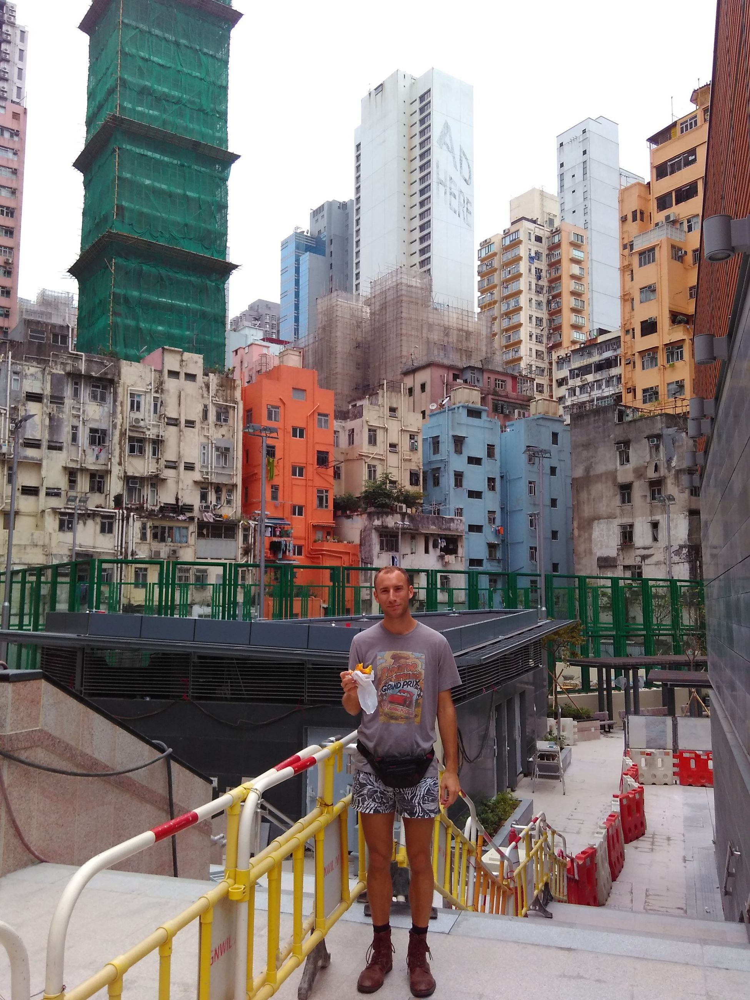
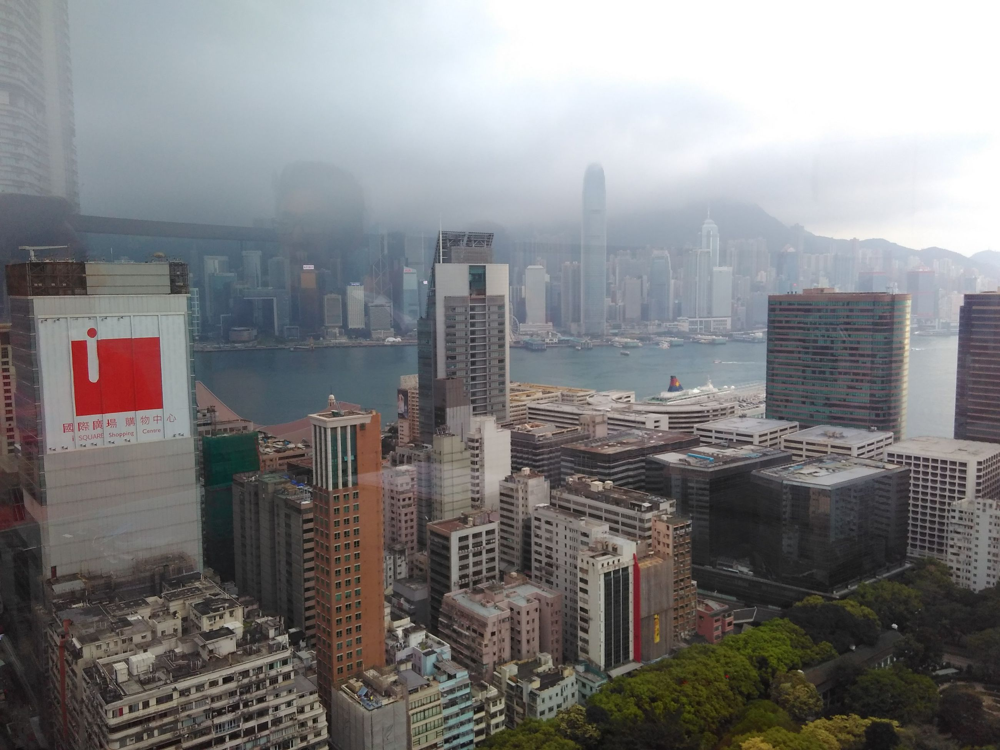
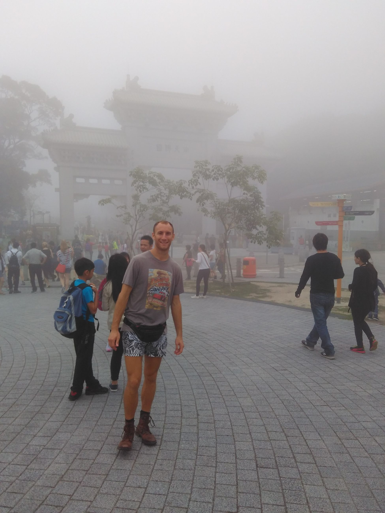
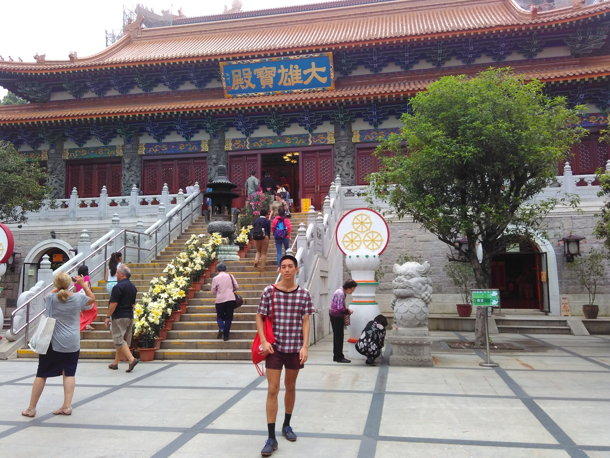
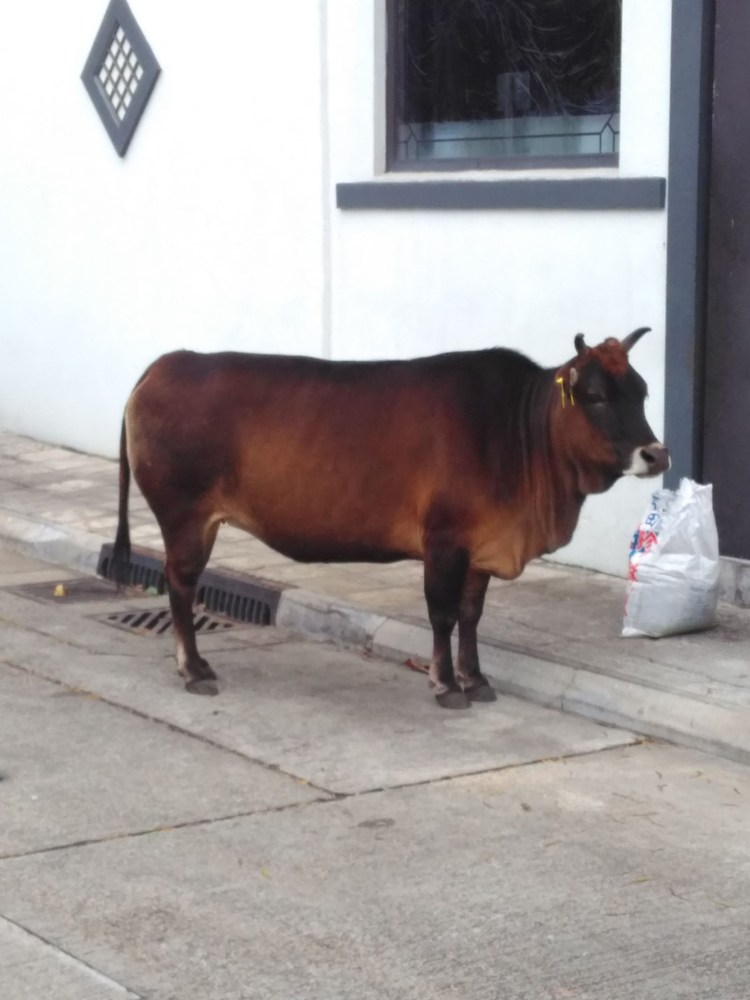

Living south-east side has its perks. We hadn't seen a friend Josh in over 3 years and it just so happened that he was stopping by Singapore. He visited us on my birthday. Then, he said, "I'm having a housewarming in April, join us." So, having never been, we obviously did and rekindled a friendship and got a free dorm. Thanks Josh, Max.
Hong Kong first impressions? A grimy, realer version of Singapore. Leaving impressions? Really grimy. Did some shopping at Mongkok and just browsed around.


We heard there was a huge Buddha at the top of this mountain thing, so obviously we did the climb. I put on my best pair of dress shoes and Thorin put on his best pair of short shorts. The climb took about 2 hours nonstop. Bitches SWEAT!


But the absolute best part waiting for us at the top of the mountain? Yes you guessed it

Yeah, check it out sometime if you're in for an experience. Climbing the mountain is calorie burning for days.